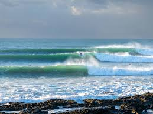
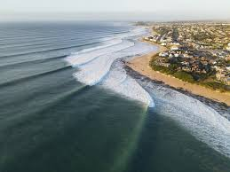
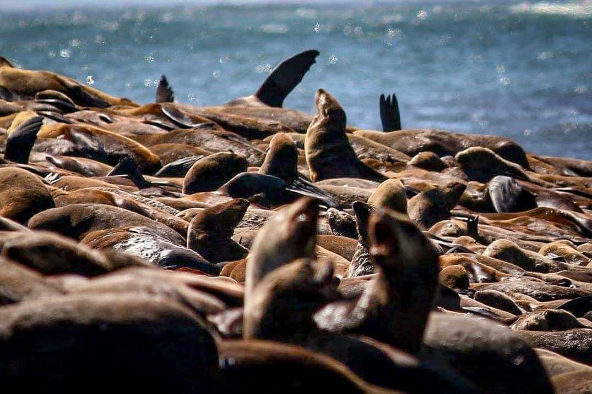
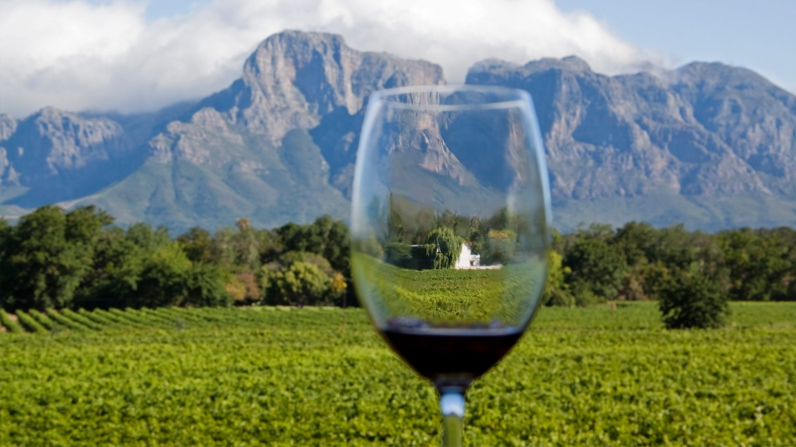

Это путешествие для тех, кто ищет честный контакт с Океаном. Южная Африка не прощает фальши, но вознаграждает тех, кто готов выйти за рамки привычного ради моментов, меняющих сознание.
Мы едем на легендарный Джеффрис-Бей — мировой стандарт качества, где бесконечные стены воды требуют полного присутствия.
Подать заявку на трип
Raw Power / J-Bay

В ЮАР страшно ехать одному, но с правильным проводником это превращается в контролируемый экстрим. Илья поможет прочитать эти волны и найти свой ритм на одном из самых знаменитых спотов планеты.

После мощных сессий — виноградники Стелленбоса и уют костров. Это трип про мужскую энергию, баланс сурового океана и абсолютной свободы в деталях.

Кульминация трипа — выход в буш. Мы увидим «большую пятерку» в их естественной среде, чтобы почувствовать настоящий масштаб этого континента.
Обсудить детали